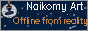
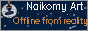

Контакты/Kontaktoj: arturaiwasan@gmail.com
Галерея/Galerio
[Ссылка/Hiperligo]Музыка/Muziko
[Ссылка/Hiperligo]Всякое/Alia
[Ссылка/Hiperligo]Неофициальное объединение по видеоигре Half-Life в ВКонтакте [RU]: [Ссылка/Hiperligo]
Проект "Декогеренция"/Projekto "Decogerencia": [Ссылка/Hiperligo]

Раздел о INSTEAD/Sekcio pri INSTEAD [Ссылка/Hiperligo]
Сайт/Retejo: [Ссылка/Hiperligo]
Раздел игры "Пробуждение"/Ludsekcio "Probuĝdenie": [Ссылка/Hiperligo]
Раздел игры "Дракон и Башня"/Ludsekcio "Drakon i Baŝnya": [Ссылка/Hiperligo]
Раздел игры "Утро принцессы Асурьи"/Ludsekcio "Utro princessi Asuri": [Ссылка/Hiperligo]
Раздел игры "R01"/Ludsekcio "R01": [Ссылка/Hiperligo]
Раздел игры "Робот"/Ludsekcio "Robot": [Ссылка/Hiperligo]
![[Frenzy, FreeBSD LiveCD]](pic/frenzy_btn.png) 
![[INSTEAD]](pic/instead_btn.png)
![[Browsers]](pic/browsers_btn.png)
Поделись этой кнопкой на своём сайте!=)
2020